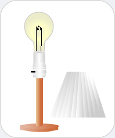

|  |
Light Bulb
Chemicals you may find: Tungsten in filament Lead in wires Molybdenum wires Glass Bulb (Quartz is used in the manufacture of glass) |
| Until the early 1800's, open flames, torches, candles and lanterns were used to generate an artificial source of light. In the early 19th century, Thomas Edison invented the first long-lasting incandescent light bulb. The light bulb is considered to be one of the most significant inventions in the history of mankind. The technical term for a light bulb is a "lamp." A lamp consists of a bulb shaped air-tight glass container surrounding a thin metal filament. Due to its strength and ductility, tungsten is used to make filament coils. Tungsten has a high melting point and therefore, it can withstand high temperatures while providing intense brightness. Only four to six percent of electrical power supplied to the bulb is converted to visible light; the rest is lost as heat. In spite of their lack of efficiency, lamps are widely used today due to their low cost and wide availability, ease of incorporation into electrical systems, and low voltage operation. | |